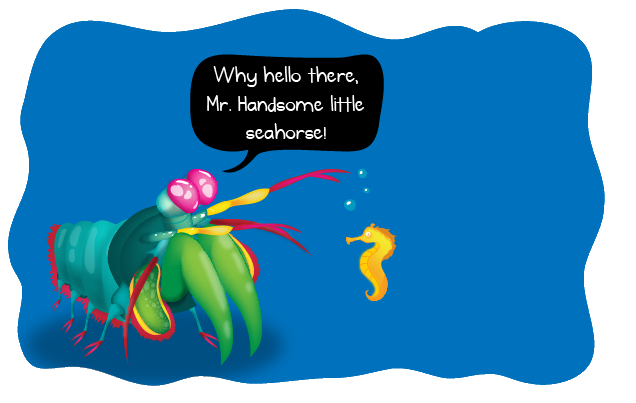

Fatos sobre o Stomatopoda
Um Camarão Louva-a-deus

A Stomatopoda (Odontodactylus scyllarus), chamadas popularmente de lagostas-boxeadoras, tamarutacas ou de lacraias-do-mar no Brasil, é uma ordem de crustáceos marinhos da subclasse Hoplocarida, que agrupa cerca de 400 espécies, caracterizadas principalmente pela morfologia da segunda pata torácica, que é modificada em apêndice subquelado, lembrando uma pata de louva-a-deus.
| Reino | Animalia |
|---|---|
| Filo | Arthropoda |
| Subfilo | Crustacea |
| Classe | Malacostraca |
| Subclasse | Hoplocarida |
| Ordem | Stomatopoda |
Inimizade Colorida
Para começar, as lagostas-boxeadoras contam com olhos incríveis, que possuem três pontos focais cada e são capazes de enxergar do espectro ultravioleta ao infravermelho. Para que você tenha uma ideia, o olho humano contém milhões de células fotorreceptoras, entre elas os cones, que são as que nos permitem ver as cores. Nossos olhos possuem três tipos desses receptores — que respondem à luz azul, verde e vermelha —, que nos permitem perceber o espectro de cores que vemos. Os cães contam com apenas dois tipos de cones (verde e azul), e é por isso que eles vêm tons de azul, verde e um pouco de amarelo. Já as borboletas, sortudas, possuem cinco tipos de cones, o que significa que elas conseguem enxergar cores que o nosso cérebro é incapaz de processar. Contudo, as lagostas-boxeadoras são um crustáceo tão sensacional que elas não possuem dois, três ou cinco tipos de cones apenas. Elas contam com 16! Assim, o arco-íris que elas enxergam deve ser uma verdadeira explosão termonuclear de cores, luz e beleza. Mas, como a grande maioria das criaturas, esses animais também possuem um lado obscuro. No caso das tamarutacas, esse lado é negro e sanguinário.
"Vaza da minha quebrada"

As lagostas-boxeadoras costumam ser encontradas próximo à costa de mares tropicais e subtropicais e são predadoras letais que se alimentam de caranguejos, camarões, moluscos e peixes. Na verdade, apesar de não serem muito grandes — entre 15 e 30 centímetros —, as tamarutacas são um verdadeiro pesadelo dos oceanos, sendo consideradas como um dos animais mais violentos do planeta.
Baby Don't Hurt Me ~

Elas possuem duas patas superpoderosas na parte dianteira que, quando acionadas, são capazes de proferir um golpe com a mesma aceleração de um disparo de uma arma do calibre 22 e força de impacto de 60 kg/cm3! E isso em menos de 1/3.000 de segundo, o que significa que, se um humano pudesse acelerar os braços com 1/10 desse poder, seria possível lançar uma bola de baseball em órbita ao redor da Terra.Essas patinhas se movem tão depressa que a água próxima a elas chega a ferver — em um fenômeno chamado supercavitação —, além de provocar uma onda de choque capaz de matar a presa mesmo que a lagosta maldita erre o golpe. Assim, com esse movimento ninja, as tamarutacas assassinam outros animais, despedaçando os coitados, mesmo que contem com carapaças protetoras.